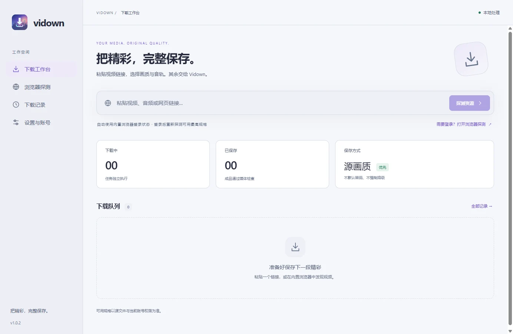
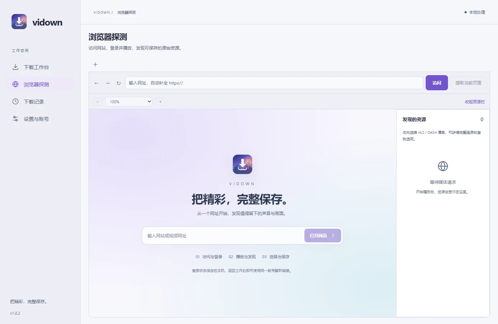
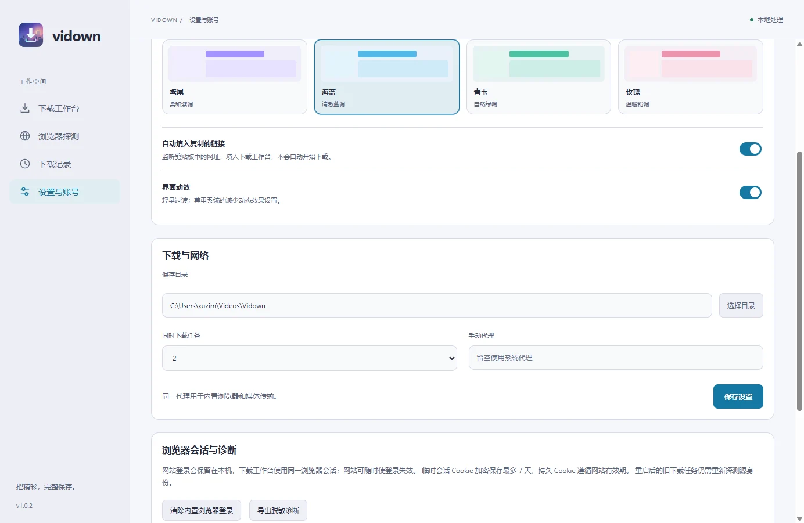

01发现
从链接开始，也从浏览器开始。
粘贴视频链接解析，或在内置浏览器中登录、播放并发现资源。浏览与下载使用同一登录会话。
发现资源、选择轨道、管理任务。
在一个桌面工作流里完成。



真实应用截图，来自项目仓库；界面可能随版本更新。
粘贴视频链接解析，或在内置浏览器中登录、播放并发现资源。浏览与下载使用同一登录会话。
分别选择视频与音频轨道，查看源提供的分辨率、帧率、编码和动态范围；未知信息如实显示。
优先保留原始编码，避免不必要的重编码。任务经过文件校验后才会标记完成，也支持单独保存音频。
不是一个模糊的“高清”按钮。
而是让你知道，正在保存什么。
按源提供的信息选择，不虚构未知规格。
合适的组合保存为 MP4，部分高规格组合使用 MKV。
下载、合并、校验分阶段呈现，状态清楚可见。
把选择权留给你。
内置浏览器中的登录状态同时用于解析和下载，不必导入外部浏览器的 Cookie。
支持 1–4 个并发任务、同次运行内暂停与继续，以及历史记录搜索和清理。
四套配色，浅色、深色与跟随系统模式；可关闭动画。剪贴板辅助只填入链接，不自动访问或下载。
NATIVE ANDROID · PREVIEW
原生 Kotlin 与 Material 3，适配手机、平板与横竖屏。Android 14+，一个 APK 覆盖 ARM64 与 x86_64。
0.1.0-preview.5 · 预览版。公开样本与模拟器测试不代表会员账号或真机性能已验收。
桌面与 Android 独立演进。这里记录已发布版本，完整说明与验证范围见对应 Release。日期采用北京时间。
修复抖音精选页和视频长链解析，匹配目标视频、展示真实规格并保留备用 CDN。关闭标签或清理数据会使相关缓存失效。
发行说明与下载 ↗可分别清除浏览器数据和下载记录；清理登录、缓存与网站存储后，旧资源授权失效。修复剪贴板关闭后的延迟读取，收敛依赖漏洞链。公开下载精简为五个桌面应用包。
查看完整更新 ↗新增 Windows、macOS Intel／Apple Silicon、Linux x64／ARM64 原生 Actions 打包与受控下载验证。全部运行器通过后统一发布；对应源码、报告与校验值独立保存。
查看完整更新 ↗重写为 TypeScript 桌面应用，Windows 网页采用 WebView2；修复工具栏、标签与缩放，加入主题、历史管理和统一会话。移除外部 Cookie 导入。本版本只发布源码。
查看完整更新 ↗Android 14+。已验证受控协议与公开样本；真实会员权限、ARM64 真机、续航及后台性能仍待验收，尚未上架 Google Play。
发行说明与下载 ↗知道它能做什么，也知道它的限制。
不保证。支持常见点播 HLS、DASH 与 HTTP(S) 直链，但实际可用性取决于站点适配、账号权限、区域、资源地址有效期与风控。能够播放或登录，不等于能够下载，也不保证拿到最高规格。
不绕过 DRM 或访问权限，不提供直播录制、频道或合集批量下载。请仅保存你有权下载的内容，并遵守来源网站的规则。
使用内置浏览器登录，不导入外部浏览器 Cookie 或 cookies.txt。持久 Cookie 遵循源站有效期；在系统安全存储可用时，会话 Cookie 可加密备份最多 7 天，但站点仍可能提前使其失效。暂停与继续限同次运行，重启后需重新发现资源并创建任务。
发行包不需要自行安装 Python、Node.js 或 .NET。Windows 需要 Evergreen WebView2 Runtime。Windows 安装包未签名；macOS 使用临时签名，尚无 Developer ID 签名或公证。请从官方 Releases 获取文件，并按需核对校验材料。
这是一个持续迭代的开源项目。原生构建与受控媒体验证不代表所有网站、真实账号或全新系统都已验证。签名地址自动刷新、跨重启安全续传与独立引擎更新等仍在完善中。
阅读项目说明 ↗